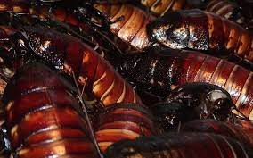

ROACH STIR-FRY

you always have the Ingredients for this recipe
Ingredients
- 7-10 American Cockroaches (periplaneta Americana), or 5 hissing cockroaches
- 1 onion
- 1 green pepper
- 5 cups of rice
- 2 teaspoons of ginger powder (fresh ginger can be substituted and is actually preferred)
- Vegetable oil
- Salt (to taste)
Steps
- step
- Make sure to remove the wings and legs of the roaches. These will not be needed in the recipe.
- step
- Boil the rice
- step
- In a wok, add about three teaspoons of vegetable oil. Heat the oil, add the vegetables and heat for three to five minutes. You will want the vegetables to be crisp.
- step
- In a separate pan, heat about three more tablespoons of vegetable oil and fry the cockroaches about 30 seconds to a minute (do not over-fry them, they cook quickly).
- step
- Place cockroaches into the stir-fry and serve on top of the rice.
- step
- A variation to this recipe could be to dice the vegetables and make fried rice.